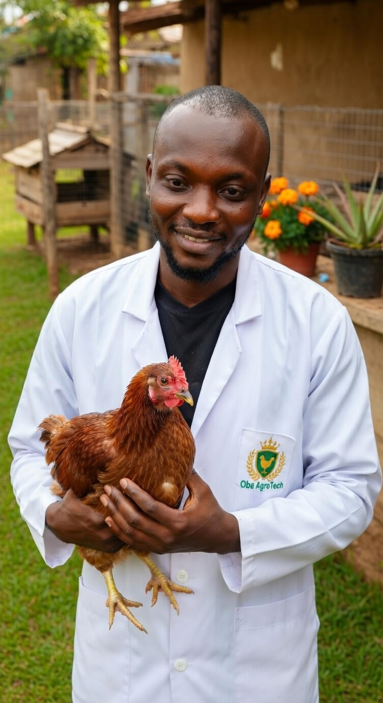

First 10 serious farmers: FREE 10-minute intro consult this month inshaAllah!
Why Farmers Choose Oba AgroTech

Professional Poultry Veterinary Consultant based in Nigeria. I combine expert veterinary care with halal creativity using beneficial indoor flowering plants to help you achieve higher productivity and healthier flocks sustainably.
Accurate disease diagnosis and treatment plans
Biosecurity and flock management advice
Natural plant solutions for pest control and immunity
Online Poultry Consultations — Diagnosis, treatment plans, vaccination schedules, and flock health management via WhatsApp.
Plant Integration Guidance — Using marigold, lavender, basil, aloe vera and other health-benefit plants for natural pest control, stress reduction, and better farm environment.
Custom Farm Productivity Plans — Tailored solutions for backyard or commercial operations.
Our unique approach: Combining expert poultry veterinary knowledge with halal creativity using indoor flowering plants to make your farm more productive, natural, and sustainable.
Marigold — Helps manage parasites and boosts immunity
Lavender & Peppermint — Natural pest repellent and reduces stress
Aloe Vera — Improves air quality and simple natural remedies